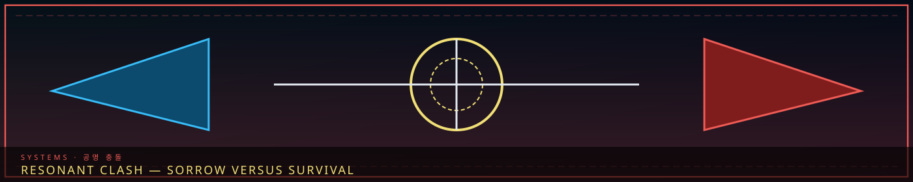

/// RAPID JUMP:
STATUS: ARCHIVE VERIFIED |
CLEARANCE: LEVEL-4 OVERSIGHT |
PROTOCOL: REVERIE DIRECTORATE
ARTICLE
DISCUSSION
SOURCE
HISTORY
YEAR 4,238 · DAWN OF HOPE
SYSTEMS & MECHANICS RECORD
Resonant Clash & Combat Mechanics
Contents
- Narrative Combat Framework
- Battle Turn Rules
- Narrative Combat Framework
- I. Combat Flow — How Battles Unfold
- II. Entity Combat Behavior — How Entities Fight
- III. Personnel Combat Actions — What Characters Do
- IV. Battle Consequences
- V. Boss Encounters — Special Mechanics
- VI. Battle Atmosphere
- VII. Battle Narrative Structure
“In Somnarak, every battle is a conversation between sorrow and survival.”

 Han typeSets the tooth
Han typeSets the tooth ApproachWork chooses the blow
ApproachWork chooses the blowOverview
# SOMNARAK — Battle System
Battle Turn Rules
| Battle Type | Minimum Turns | Description |
|---|---|---|
| Short | 10 turns | Quick encounter — minor entity, small skirmish |
| Medium | 16 turns | Standard encounter — moderate entity, Fray confrontation |
| Long | 20+ turns | Major encounter — powerful entity, boss fight, critical mission |
Each turn includes:
- Character actions
- Dialogue
- Combat mechanics
- Environmental description
- Emotional beats
# SOMNARAK — Battle System
Narrative Combat Framework
"In Somnarak, every battle is a conversation between sorrow and survival."
I. Combat Flow — How Battles Unfold
The Three Phases
Every battle in Somnarak follows three phases:
| Phase | Name | Description |
|---|---|---|
| 1 | Tension | The build-up — assessing the threat, preparing, positioning |
| 2 | Clash | The confrontation — Work Types, M.A.W., entity response |
| 3 | Resolution | The outcome — containment, escape, Fracture, or death |
Phase 1: Tension (긴장 — Ginjang)
What happens:
- The threat is identified — entity, Fractured being, environmental hazard
- Personnel assess the situation — Sorrow Gauge, entity classification, Work Type selection
- Positioning — who goes where, who does what
- Equipment check — M.A.W. status, attribute assessment
Narrative focus:
- The atmosphere — what does the air feel like? What does the entity look like?
- The characters — what are they thinking? What are they afraid of?
- The stakes — what happens if they fail?
Duration in story: Minutes to hours — depending on the threat level.
Phase 2: Clash (충돌 — Chungdol)
What happens:
- Work Types are performed — Flerehan, Pugnahan, Viderehan, Ferrehan
- M.A.W. is activated — weapons strike, armor protects, tools assist
- The entity responds — attacking, defending, transforming, retreating
- Attributes are tested — Resilience, Clarity, Composure, Resolve
Narrative focus:
- The action — what does the combat look like? What does it feel like?
- The characters — how do they react under pressure? What do they sacrifice?
- The entity — what does it want? How does it fight? What is its weakness?
- The escalation — does the battle intensify? Does the entity transform?
Duration in story: Minutes to days — depending on the entity's power.
Phase 3: Resolution (결의 — Gyeol-ui)
What happens:
- The outcome — containment, escape, Fracture, or death
- Consequences — injuries, attribute changes, M.A.W. damage
- Aftermath — what was learned? What was lost? What changed?
- Documentation — the battle is recorded in the facility log
Narrative focus:
- The cost — what did the battle cost? Who was hurt? What was lost?
- The lesson — what did the characters learn? How did they change?
- The aftermath — how does the world respond? What happens next?
II. Entity Combat Behavior — How Entities Fight
Entity Behavior Patterns
Each Sorrow Entity has a combat behavior based on its Coherence level, Element, and Manifestation type.
By Coherence Level
| Coherence | Combat Behavior |
|---|---|
| I — Residue | Passive — does not attack directly, causes ambient distress |
| II — Echo | Reactive — responds to stimuli, mimics behavior |
| III — Fragment | Active — seeks, attacks, has preferences |
| IV — Entity | Intelligent — strategizes, communicates, adapts |
| V — Sovereign | Autonomous — unpredictable, reality-bending |
By Element
| Element | Combat Style | Weakness |
|---|---|---|
| Lament (Deep Blue) | Emotional attacks — grief waves, sorrow overwhelming | Clarity (mental resistance) |
| Grudge (Crimson) | Physical attacks — rage strikes, relentless assault | Resilience (physical endurance) |
| Void (Pale White) | Identity attacks — memory theft, reality distortion | Composure (emotional control) |
| Weight (Black) | Pressure attacks — debt accumulation, crushing sorrow | Resolve (willpower) |
By Manifestation Type
| Type | Combat Behavior |
|---|---|
| Subject (Being) | Direct combat — physical attacks, abilities |
| Object (Thing) | Passive effects — area denial, status effects |
| Place (Location) | Environmental — the battlefield itself is the enemy |
| Time (Moment) | Temporal — time distortion, déjà vu, loops |
Entity Combat Actions
| Action | Description | Trigger |
|---|---|---|
| Sorrow Wave | A burst of Han-energy that affects all nearby | Entity is agitated |
| Targeted Strike | A focused attack on a specific person | Entity identifies a threat |
| Sorrow Absorption | Drains Han from nearby personnel | Entity is hungry |
| Transformation | Changes form or abilities | Entity is losing |
| Retreat | Withdraws to a safer location | Entity is overwhelmed |
| Summon | Calls other entities or creates constructs | Entity is intelligent |
| Corrupt | Warps the environment — making the battlefield dangerous | Entity is powerful |
III. Personnel Combat Actions — What Characters Do
Offensive Actions
| Action | Description | Attribute | Element |
|---|---|---|---|
| M.A.W. Strike | Attack with equipped M.A.W. weapon | Varies by weapon | Varies |
| Han Pulse | A burst of Han-energy — pushes entities back | Resolve | Weight |
| Resonance Attack | A focused emotional attack — exploits entity weakness | Composure | Varies |
| Work Type Offensive | Using a Work Type offensively — Flerehan to overwhelm, Pugnahan to stun | Varies | Varies |
Defensive Actions
| Action | Description | Attribute | Element |
|---|---|---|---|
| Block | Absorb an attack with M.A.W. armor | Resilience | Varies |
| Evade | Dodge an attack — requires speed and awareness | Clarity | Void |
| Counter | Absorb an attack and strike back | Resolve | Grudge |
| Support | Protect another person — take damage for them | Composure | Lament |
Support Actions
| Action | Description | Attribute | Element |
|---|---|---|---|
| Heal | Restore a person's health or sanity | Composure | Lament |
| Boost | Temporarily increase a person's attributes | Resolve | Weight |
| Scan | Analyze the entity — reveal weaknesses | Clarity | Void |
| Rally | Inspire the team — increase morale | Resolve | Grudge |
IV. Battle Consequences
During Battle
| Consequence | Effect | Duration |
|---|---|---|
| Injury | Physical damage — reduced HP | Until healed |
| Sanity Loss | Mental damage — reduced Clarity | Until recovered |
| Sorrow Exposure | Han absorption — attribute reduction | Temporary |
| M.A.W. Damage | Equipment degradation — reduced effectiveness | Until repaired |
After Battle
| Consequence | Effect | Duration |
|---|---|---|
| Attribute Change | Permanent increase or decrease | Permanent |
| Fracture Warning | Early signs of Fracture | Until treated |
| M.A.W. Rejection | Equipment rejects the user | Until re-bonded |
| Death | Permanent loss | Forever |
| Fracture | Transformation into Sorrow Entity | Irreversible |
V. Boss Encounters — Special Mechanics
Entity-Specific Mechanics
Each powerful entity has unique mechanics — special abilities, weaknesses, or conditions.
Example — The Orphaned Bell (IV-δ-001):
- Toll Attack: Periodic bell toll — damages all personnel's Clarity
- Memory Loss: Prolonged exposure causes memory loss
- Weakness: Flerehan — singing to the bell calms it
- Special Condition: If the bell is silenced, it becomes vulnerable
Example — The Smothering Mother (IV-δ-005):
- Embrace Attack: Grabs personnel — traps them in a crushing hug
- Sorrow Absorption: Drains Han from trapped personnel
- Weakness: Viderehan — showing her that her child is at peace
- Special Condition: If she is shown her child's memory, she releases her victims
Example — The Maw (IV-ω-001):
- Area Effect: The district itself is the entity — all personnel inside are affected
- Sorrow Tide: Periodic waves of concentrated Han
- Weakness: None known — the Maw cannot be defeated
- Special Condition: The Maw can only be communicated with — through the Containment Lead
VI. Battle Atmosphere
Environmental Effects
| Environment | Effect on Battle |
|---|---|
| Zone B | Heavy Han — entity abilities amplified, personnel attributes reduced |
| Zone C | Veil active — entity abilities suppressed, personnel attributes normal |
| Zone D | Mixed — depends on district |
| Zone E | Outside Sorrow present — entity abilities unpredictable |
| Desolate | Raw Han — entity abilities maximized, personnel at severe disadvantage |
| Deep Underground | Han-dense — all abilities amplified, both entity and personnel |
Atmospheric Elements
| Element | Description |
|---|---|
| Sound | The entity's voice — whispers, screams, songs, silence |
| Light | Han-lamps flicker, shadows move, the entity glows |
| Temperature | Cold (Void), Hot (Grudge), Heavy (Weight), Ethereal (Lament) |
| Smell | Sorrow has a scent — tears, ash, dust, rain |
| Feeling | The air itself carries emotion — grief, rage, emptiness, weight |
VII. Battle Narrative Structure
How to Write a Battle
Step 1: Set the Scene
- Where are they? What does it look like? What does it feel like?
- What is the entity? What does it want? What is its weakness?
Step 2: Build Tension
- The entity is identified. The team prepares. The stakes are clear.
- What are the characters afraid of? What do they have to lose?
Step 3: The Clash
- Work Types are performed. M.A.W. is activated. The entity responds.
- What does the combat look like? What does it feel like?
- How do the characters react under pressure?
Step 4: Escalation
- The battle intensifies. The entity transforms. The team is pushed to their limits.
- What is the turning point? What is the cost?
Step 5: Resolution
- The outcome — containment, escape, Fracture, or death.
- What was learned? What was lost? What changed?
Step 6: Aftermath
- The consequences — injuries, attribute changes, M.A.W. damage.
- How does the world respond? What happens next?
CANONICAL CROSS-LINKS & ATLAS CONNECTIONS